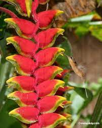

The Amazon Rainforest in South America (mainly Brazil) contains ~10% of every animal and plant species on Earth, with a few spdcies
being unique to the Amazon. Spanning 6.7 million km2, it is the world's largest rainforest and contains one of the largest
rivers, the Amazon River.
Characteristics
The Amazon Rainforest is a tropical forest and experiencs little-to no seasonal variation. Temperatures in the Amazon range between
26 to 30 degrees and being a rainforest, the Amazon receives 2,000 to 10,000 mm of rain per year.
Flora
The Amazon Rainforest contains a staggering diversity of plants, containg more than 40,000 species. The Giant Water Lily,
Victoria Amazonica, can grow upto an impressive 3 metres in diameter and can be found in the shallow areas of the Amazon River.
Their large leaves increase the area for photosynthesis with underneath to defend against heribvores. Rubber trees,
Hevea brasiliensis, originated in the Amazon before being planted in South-east Asia during the Rubber Boom.
Rubber trees' leaves have drip tips to not retain too much water, which can lead to mold growth. The Heliconia flower,
Heliconia latispatha, has evolved a symbotiotic relationship with hummingbirds, with Heliconia's nectar being their primary
food source and the hummingbirds' being the Heliconia's main pollinator.

Flora... Continued
More plant species include the Coffee Plant, Coffea arabica. The original purpose for caffeine was to toxify insects that consumed
it. The Monkey Brush Vine, Combretum rotundifolium, is a parasitic vine that grows red flowers and is the resting place of iguanas.
The Kapok Tree is one of the largest trees in the Amazon and is the home of many animal species. Its light-weight wood is used by the
locals to make canoes.
Fauna
One of the thousands of animal species is the jaguar, Panthera onca. They have camoflaged fur and are excellent swimmers.
Macaws, in the genus of Ara, are well adapted to fly through the tree and are capable of using their wings as brkes when landing.
An amphibian that inhabits the rainforest are Poison Dart Frogs, a whole group of species under the family of Dendrobatidae.
Their toxins are enough to kill or atleast paralyse a potential predator with their bright colouration warning them of this. They also
have an excellent sense of vision to help tham catch their own prey. The insect species include the Leafcutter ant. Like all ant species,
there is one queen per colony that lays eggs, which hatch in larvae before becoming pupae and eventually enclosing into adult worker ants.
What is unique about this species is that they use leaves to farm fungus which they eat. They invented agriculture millions years before
humans!
Fauna... Continued
A cetacean that inhabits the Amazon River is Pink River Dolphin a.k.a Amazon River Dolphin, Inia geoffrensis. Their unfused neck
vertabrae allows them to turn their heads 180 degrees. Using their echolocation, fins designed for maneuverability and stiff, sensory
hairs in their beak, they can locate prey in murky water. The Green Anaconda, Eunectes murinus, is the world's heaviest and
second-longest living snake. Adult females can reach up to nine metres in length and a quarter of a tonne in weight. Like all boas,
they are constrictors that lack the ability to produce venom.
Threats
Each year, the level of deforestation of the Amazon has been increasing. Trees are being cut for their wood and to make space for farmland
and urban development. The Amazon Rainforest's wide diversity of species are being driven to extinction. To put the loss of biodiversity
into persective, one tree in the Amazon contains more ant species than some countries, and that is only the ants. Deforestation
is also reducing the amount of carbon-dioxide absorbing tree to help combat climate change. The Amazon is also affected by global warming,
with ever-larger forest-fires ripping through the rainforest, releasing most of it's victims stored carbon back into the atmosphere as
more CO2.
Take quiz?
Quiz Time!
Q1. How many of Earth's plant and animal species can be found in the Amazon?
Q2. What are the main threats to the Amazon Rainforet?
Q3. Which animal developed agriculture first?
Q4. The wood from which tree is used by locals to make canoes?